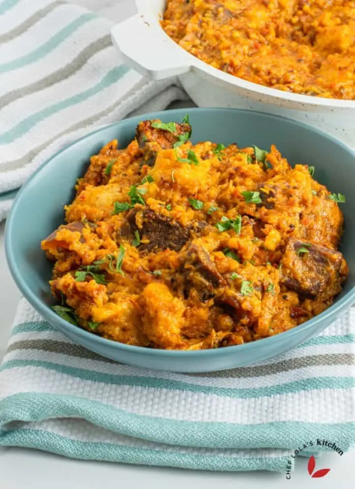

Ikokore Recipe

Description
Ikokore (also known as Ifokore) is a traditional Nigerian dish from the Yoruba people. It is a delicious dish that captures the true essence of Nigerian cuisine. This dish is savory and slightly spicy, with a blend of meaty, fishy, and earthy notes. It may sound weird, but do you know that you can serve ikokore with rice or enjoy it alone.
When Ikokore is mentioned, the first thing that comes to mind is the Ijebu people of Ogun State, Nigeria. This rich, hearty meal is made from water yam (Dioscorea alata), grated to create a base.
Ingredients
- 1 pound beef cut into cubes
- ½ pound cow skin Ponmo, cut into cubes
- 2½ pound yam water yam
- 1 cup peppers blended mix of bell peppers and 1-2 rodo
- 1 cup crayfish large
- 2 fish dried
- 1 mackerel fish grilled
- 2 tablespoon crayfish ground
- 2 tablespoon locust beans
- 6 tablespoon palm oil
- 3 teaspoons bouillon powder divided
- salt to taste
- Parsley for garnish, Optional
Steps
- First, season the beef and cow skin (pomo) with salt and 2 teaspoons bouillon powder. Mix well, cover, and let them cook in their own juices.
- While the meat is cooking, peel, rinse, and grate the water yam using the smallest holes on your grater. Alternatively, for a quicker method, use a food processor to blend it. Season the grated yam with a bit of salt and 1 teaspoon bouillon powder, then mix well.
- Next, create a rich broth by adding water, dried fish, grilled mackerel, dried prawns, locust beans, blended pepper, ground crayfish, and a splash of palm oil to the boiling meat. Simmer it all together until the meat becomes tender.
- Once the meat is tender, remove all the pieces of meat and other proteins from the pot. Add more water if needed.
- Form small balls from the seasoned water yam mixture with your fingers and gently drop them into the broth. Cover and let these simmer for about 5 to 8 minutes.
- Put the proteins back into the pot, along with a little more palm oil. Simmer everything together for another 3 to 5 minutes. Stir occasionally and break the lumps if desired.
- Taste and adjust the seasonings if necessary.
- Optionally, garnish with chopped parsley for a fresh finish.
Back to home